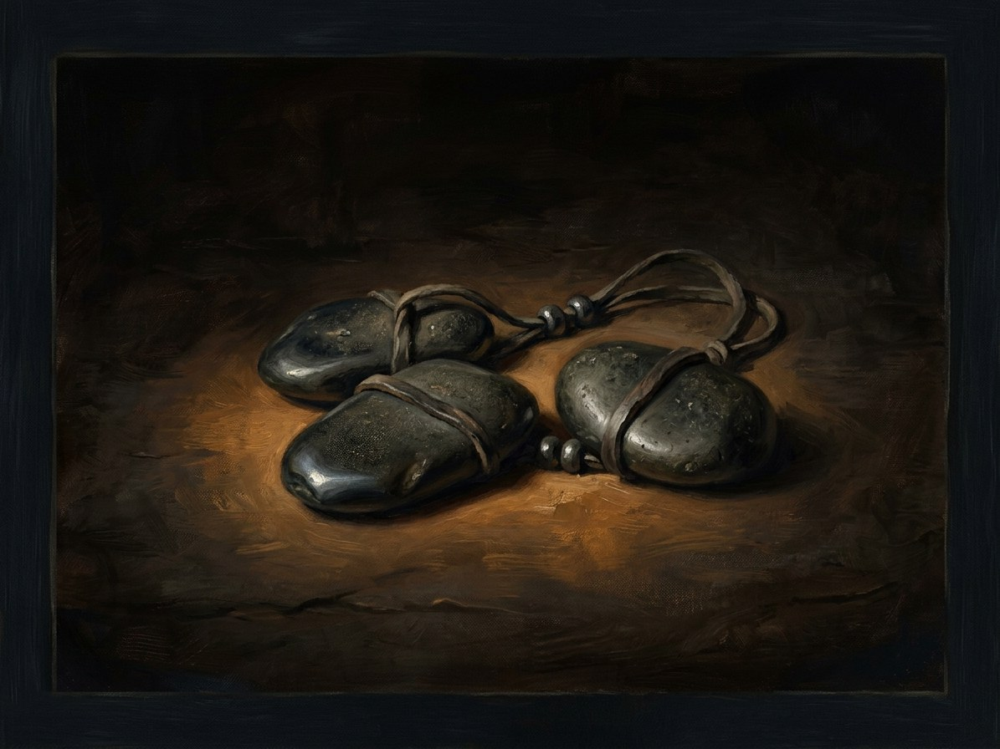

Henė’s three black stones¶
Relations
Created by: Šešėlių Pardavėjas / Henė
Held by: Šešėlių Pardavėjas / Henė (1380–1434) — Stones leave his hand: 3 (1380), 2 (1397), 1 (Oct 1430), 0 (1 Jun 1434).
Bearing Henė alone juggles them: Jogaila's, Skirgaila's and Vytautas's. A stone shows a deal in progress
Holders Henė 1380 to 1 Jun 1434. Stones in hand: three (1380) → two (Skirgaila's falls, 11 Jan 1397) → one (Vytautas's falls, 27 Oct 1430) → none (Jogaila's drops, 1 Jun 1434)
Power Each stone shows one cousin's bargain in progress. Its fall marks the collection of that bargain
Rule & cost Each falls when its cousin's deal is collected. Once his hands are empty, Henė has no leverage left and unmasks (Book V)
Appearance. Three black, worn, round stones like river pebbles, but not from a river. Two fly true and the third always wobbles. When he is working, the cap-bells are silent and the stones make no sound.
Origin. Made 1380, the year of Dovydiškės. The first deal is with Jogaila at Krėva in 1382: the easy way, the crown for his line, the land lost.
To the letter. He keeps bargains to the letter. I never lie; I only write it down.
Where they fell. Skirgaila's falls through the floor at Kyiv like falling into water. Vytautas's falls in the death chamber, and Henė throws it into Lake Galvė at dawn on 28 Oct 1430: no splash, a film of ice parts and closes.
Empty hands. Jogaila's drops on the floor of his deathbed room on 1 Jun 1434 and does not roll: an ordinary river pebble. After 52 years Henė's hands are empty (Book V ch. 12).
Henė’s three black stones

Henė’s three black stones · artifact¶
Type |
artifact |
Years |
made 1380 |
Note |
Henė’s three black stones; physical counters tracking the cousin princes’ bargains. |
Description¶
Three black, worn, round stones “like river pebbles, but not from a river” (Book V ch. 12). Henė juggles them in every book. Two fly true; the third always wobbles. When he is working, the bells on his cap are silent and the stones make no sound.
Power¶
Each stone is one cousin’s bargain, tied to Jogaila, Skirgaila and Vytautas. A stone shows that a deal is in progress; its fall marks the collection of that bargain (Power systems §5; Magic rules §8).
Rule & cost¶
Henė keeps bargains to the letter and “never lies; I only write it down”. Each stone falls when its cousin’s deal is collected: Skirgaila’s in 1397, Vytautas’s in 1430 and Jogaila’s in 1434. Once his hands are empty, Henė has no leverage left and unmasks (Book V).
Origin¶
[The saga’s invention] Made in 1380, the year of Dovydiškės. The first deal is with Jogaila at Krėva in 1382, “the easy way”: the crown for his line, the land lost.
Arc across the books¶
Three, 1385-1397. First seen juggled at the Krėva union (Book I ch. 28b) and in the Trakai hall before Skirgaila (I ch. 30, with an offer of “ten good years”). At Ostrów, 1392, he holds all three while kneeling to Vytautas (II ch. 10).
Two, 11 Jan 1397. Skirgaila’s stone falls through the floor at Kyiv “like falling into water” (II ch. 16). Two are shown through Books III-IV.
One, 27-28 Oct 1430. Vytautas’s stone falls in the death chamber (IV ch. 29). Henė throws it into Lake Galvė at dawn on 28 Oct: no splash, a film of ice parts and closes (IV ch. 30).
None, 1 Jun 1434. Jogaila’s stone drops on the floor of his deathbed room and does not roll; it is an ordinary river pebble. After 52 years Henė’s hands are empty (V ch. 12). He keeps them empty in V ch. 19, 24, 26 and 30.
Henė holds the stones 1380-1434: three at first, two in 1397, one in Oct 1430, none from 1 Jun 1434; there are no stones after 1434.
Connections¶
graph LR
shadow_seller["Šešėlių Pardavėjas / Henė"]
three_stones["Henė's three black stones"]
three_stones -->|Created by| shadow_seller
shadow_seller -->|Holds| three_stones
style three_stones stroke-width:3px